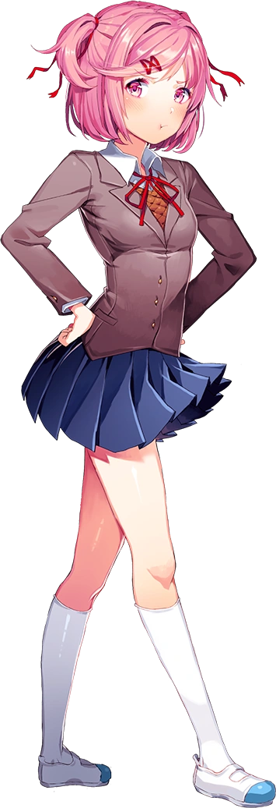

Natsuki é uma garota que parece ser direta, irritada e até arrogante, mas possui um lado suave e delicado. Monika a vê como uma tsundere, alguém que esconde seus sentimentos por trás de um exterior duro. Embora Natsuki seja impulsiva e fale sem pensar, ela se importa com os amigos e não gosta de brigas. Durante o jogo, ela demonstra preocupação com Yuri e pede ao protagonista para ajudar Yuri, mostrando sua dificuldade em expressar sentimentos. Natsuki é teimosa, e quando desafiada, ela fica nervosa ou até chora.
Fora da escola, Natsuki se comporta de maneira mais relaxada. Ela é conhecida por fazer cupcakes deliciosos e por sua coleção de mangás, que guarda em segredo por vergonha de seu pai. Ela gosta de mangás do gênero slice-of-life e prefere poemas que tenham um tom mais fofo, mesmo que seus próprios escritos envolvam temas tristes.
Natsuki acredita que é importante transmitir significados profundos de forma simples. Seu estilo de escrita é diferente de Yuri, que usa uma linguagem mais elaborada. No primeiro ato, a protagonista deve escolher entre apoiar Natsuki ou Yuri, e a escolha pode levar a conflitos. Natsuki não gosta de ser chamada de "fofa", mesmo quando age de maneira doce, e luta para ser levada a sério em seus interesses.
Ela tenta esconder sua solidão e anseia por afeto, como mostrado quando pergunta ao protagonista se seus poemas são os melhores, quase pedindo uma confirmação de que são bons. No segundo ato, Natsuki mantém sua personalidade do primeiro ato, mas também revela mais sobre sua relação problemática com o pai. Ao ler um poema para Natsuki, ela adormece, e há momentos inquietantes em que ela desaparece, revelando um estado de saúde ruim, possivelmente devido ao seu pai.
O segundo ato mostra Natsuki mais possessiva, especialmente após uma briga com Monika sobre novos membros do clube. Sua possessividade pode ser resultado de sua falta de segurança. Ela demonstra ciúmes quando o protagonista passa tempo com Yuri e mostra um poema escrito em Base 64. Sua reação é intensa, culminando em cenas perturbadoras que refletem seus sentimentos de ciúmes e solidão.
Além disso, Natsuki parece ciente da influência de Monika sobre os outros, e tenta ajudar Yuri, oferecendo-se para fazer cupcakes. Após a morte de Yuri, Natsuki enfrenta uma cena dramática ao encontrar o corpo dela, reagindo de forma visceral e fugindo em choque.